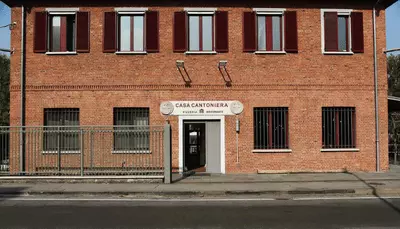
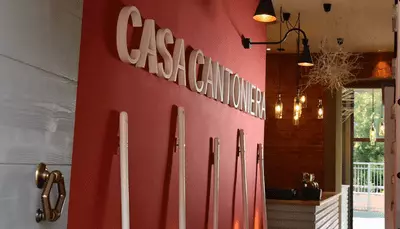
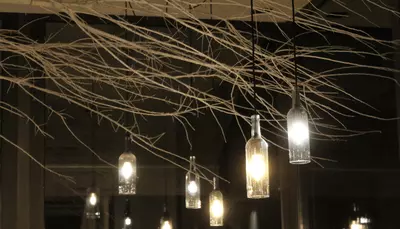
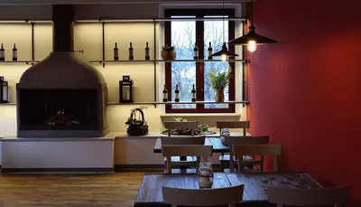
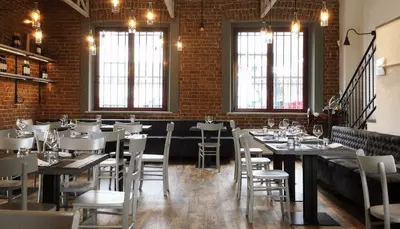
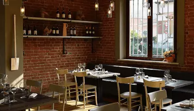
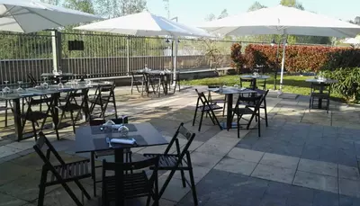
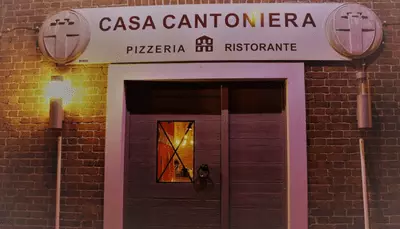

Il nostro staff ti aspetta per accoglierti in un'ambiente intimo e moderno, e servirti piatti deliziosi.
Qualunque sia l'occasione, o se per una volta non hai voglia di cucinare, siamo pronti per soddisfare ogni tua esigenza.
DAI CANTONIERI DEL PASSATO... FINO A TE.
Le case cantoniere, caratterizzate dal tipico colore rosso pompeiano, prendono il nome dai "cantonieri", gli operai addetti alla manutenzione delle strade, che per esigenze di servizio, avevano necessità di alloggiare sul luogo di lavoro.



Oggi, la nostra Casa Cantoniera ti aspetta per viziarti con prodotti di altissima qualità e un menù sempre aggiornato, per soddisfare ogni palato.



Con due ampie sale interne, di cui una al piano superiore, possiamo accoglierti sia per le tue cene intime che per le tue cerimonie ed eventi.
Contattaci per creare con noi menù personalizzati in base alle tue esigenze, e creare quei ricordi indelebili che rimangono sempre con noi.


Durante il periodo estivo, alla Casa Cantoniera puoi trovare un romantico dehors interno estivo, a un passo dalle rive del fiume Po.
Inoltre, abbiamo un ampio posteggio esterno gratuito riservato ai nostri clienti. Non ti resta altro da fare, se non rilassarti!